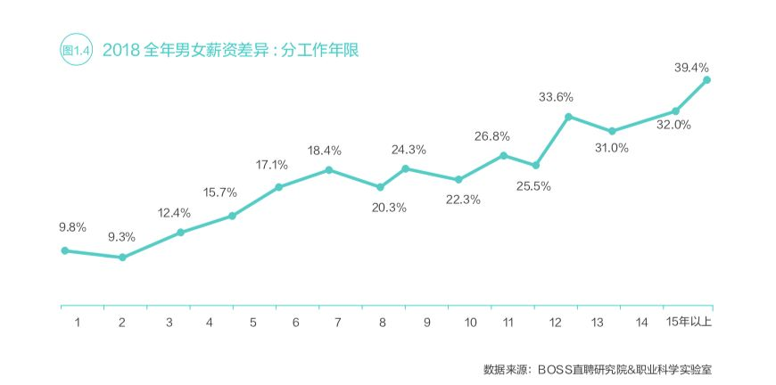

同工不同酬|女性薪酬不及男性八成，凭什么？
转自公众号：074职场女性法律热线
http://mp.weixin.qq.com/s?__biz=MzU3ODIzNjcxMw==&mid=2247484718&idx=1&sn=a1df2f9405e9be559444929129a5fc1a
近日，话题#中国女性薪酬不及男性8成#登上微博热搜，引发热议。这个数据来源于互联网招聘平台BOSS直聘发布的《2019中国职场性别差异报告》。报告显示，2018年中国女性平均薪酬为6497元，薪酬均值为男性的78.3%；此外，男女薪酬差距会随着工作时间的增加而持续加大。
是什么造成男女薪酬差异？如何消除薪酬差异？回答这两个问题，不得不谈到——同工不同酬。

01
男女同工不同酬是性别歧视
2019年3月6日，互联网招聘平台BOSS直聘发布《2019中国职场性别差异报告》，对其平台2018年的数据，教育部、统计局等国家部委的公开资料，以及2280份调查问卷进行分析。
数据显示，男性求职者被招聘者主动沟通的次数是女性的1.1倍。在计算机软件、交通运输等行业中，雇主明显更愿意考虑男性求职者。
2018全年前15个高薪岗位中，女性仅占24.5%，四分之三高薪岗位的从事人员为男性；有13个岗位女性占比在30%以下，有2个岗位女性占比甚至是个位数。

相对于女性而言，男性的晋升几率随工作年限的增加而加大。在入职前三年，多数受访者均较难获得晋升机会。 具有3-5年、5-10年和10年以上工作经验的男性比女性的晋升几率分别高1.5%、12.1%和8.3%。

初入职场的新人性别薪酬差异最小，随着工作年限的增加，性别薪酬差异持续拉大。工作经验3年以下的男女薪酬差异约为10%。当工作经验分别为7年、12年、15年以上时，男女薪酬差异超过20%、30%、40%。

长期以来，用人单位以常加班、工作辛苦为由招录男性，并以照顾家庭、精力不足为由拒绝录用女性或给予低薪。但这个说法与事实不符。根据2018年国家统计局的调查，男性的平均工作时间为7小时52分钟，女性为7小时24分钟；男性家务劳动的平均时间为45分钟，而女性为2小时6分钟。在有酬的工作时间上，男女并不存在明显差异，但在家务劳动上，女性花费的时间是男性的4倍。事实是，就业市场存在刻板印象，大多数女性会被放置在无法充分发挥其能力的职位上，只能接受低薪的工作。
男女同工不同酬是性别不平等的一个表现。父权社会固守着“男主外女主内”的社会分工，家务作为私领域内的劳动其价值并不被认可，只有公领域的劳动才被赋予价值。随着女性进入公领域工作越来越普遍，男性又通过”同工不同酬“贬低女性的劳动价值。
2018年12月，世界经济论坛发布的《2018年度性别平等报告》显示，全球各个国家女性薪资皆低于同职位男性——2018年全球性别薪酬差距是51%；全球只有约三分之一的管理职位由女性出任；全球只有17%的国家元首、18%的政府首脑，和24%的议会成员是女性。在工作场所，基于性别的区别对待，并导致薪酬差异的结果，这并非少部分人或少数企业的选择，而是存在结构性的原因。
02
同工不同酬背后是被忽视的女性价值
同工同酬并不能狭义的理解为：做一模一样的工作，拿同样的薪水。同工同酬的重要内涵是，相同的工作价值应当得到同等的价值回报。
在同工同酬的法律制定方面，英国是先行者。英国分别于1970年、1983年制定《同酬法》和《同酬(补充)规定》，若女职工认为遭遇同工不同酬，则可向法院起诉用人单位。需要注意的是，在要求同工同酬的权利时，由提出异议的女性（申请人）来选择与之比较的一个或多个男性（参照人）。参照人不能是虚拟人物，且需和申请人在同一用人单位。
英国法律对同工的定义是：从事类似工作(like work)、被评定为同等级的工作(work rated as equivalent)和具有同等价值的工作(work with equal value) 。
1）类似工作
英国劳工上诉法庭认为，可由以下两步考察是否属于类似的工作。第一，考察工作是否相同。第二，考察工作是否是广泛地相似，而其中的差别是否具有实际上的重要意义。
以互联网公司为例。在互联网A公司中，女职工苏清和男职工秦乌都是产品经理，职位相同、工作内容相似，但苏清的薪酬（包括基本工资、奖金、福利等）少于秦乌。则A公司有同工不同酬之嫌。
2）同等级工作
同等工作是指申请人在各种要求方面(如努力的程度、掌握的技能和做决策的水平等)和比照人的工作具有同等的价值。在公司的评价等级中，如果职工在同一等级，则可视为他们从事的工作为同等工作。
在A公司中，女产品经理苏清和男产品运营何乐的薪酬等级在同一级别，可是苏一的薪酬少于何乐。虽然苏清和何乐从事的不是类似工作，但A公司给予相同工作级别的职工不同的工资，同样意味着同工不同酬。
3）同等价值工作
并非所有的公司都存在工作等级评价。考虑到女职工并不能强制公司制定评价标准，因此无法以同等级工作为由进行起诉。1983年，英国的《同酬(补充)规定》规定女职工可以以同值同酬为由起诉公司。同值同酬指的是尽管女性和男性工作不同，但如果他们从事的工作具有同等价值，则应该获得相同的工资。考量的内容包括技术、努力、责任和工作情形等。
假若苏清晋升成为A公司产品部门的总监，但苏清的薪酬低于另一部门的男总监。则A公司仍存在同工不同酬之嫌。
甲骨文公司
甲骨文公司是一间全球性的大型企业软件公司。2013年，甲骨文成为继微软后的全球第二大软件公司。2017年8月，因同工不同酬，Rong Jewett、Sophy Wang和Xian Murray三位甲骨文前职工对该公司提起诉讼。从2008年起，她们在甲骨文担任产品开发的职位。她们表示甲骨文在同等工作条件、同样工作量的情况下，给女职工的工资比男职工要低。
2019年1月，美国劳工部指控甲骨文对公司受雇的女性、非裔、亚裔等职工存在薪资歧视。根据指控文件，甲骨文公司白人男职工的薪资，比女性及少数族裔职工至少高出多达25%；超过5000名女职员少付薪资达20%；5年间，甲骨文少付薪资合计超过4亿美元（约27亿元）。这么大的差距在平时难以发现，但并不让人惊讶。男女薪酬差异的背后是长期被忽视的女性群体的牺牲，而女性清醒的知道这种不平等的存在。
03
女性的反击
挪威一个金融工会曾制作过关于同工不同酬的实验视频。短片中有几对由一男一女两个孩子组成的团队。他们需要帮助实验者把球收进桶里。完成后，孩子们闭上眼，由实验者分发小点心。男孩得到了整杯的点心作为回报，而女孩的点心则不足一半。理由是，她们是女孩。女孩们抗议说：“这很奇怪”、“这不公平”、“女孩在工作中的价值不比男孩低”。
完整视频见文末
视频的最后发出质问：为什么不公平的待遇对孩子们来说无法接受，但大人却可以接受？大人也无法接受不公平的待遇。
1968年，英国达根纳姆（Dagenham）福特汽车厂里有187名女工。她们的工作和男工一样，但工资只有男工的一半。于是，这群工厂女工走上街头罢工抗议。很快，这场罢工席卷全英国。1970年，英国《同酬法》出台。
1975年10月24日，为了抗议同工不同酬的问题，冰岛90%的女性曾发起一天大罢工。2016年10月24日下午2点38分，上千名冰岛女职工离开办公室，抗议性别薪酬差距。根据计算，女性从2点38分开始“做白工”，即使工作再认真，薪水也会少于男性。这些争取推动了同工同酬新法的出台。2018年1月1日开始，在冰岛职工超过24人的用人单位，必须向政府提交证明，确保职工同工同酬，违规企业将面临罚款，一天缴纳500美元（约3400元）。

冰岛：女性要求同工同酬
2009年，美国签署与同工同酬的诉讼时效相关的《莉莉·莱德贝特公平薪酬法》（Lilly Ledbetter Fair Pay Act）。这一法案的签署源于1998年莉莉·莱德贝特（Lilly Ledbetter）起诉用人单位同工不同酬一案。莉莉在1979年至1998年间，一直在一家轮胎公司工作。1998年，莉莉发现她的工资一直低于类似岗位的男同事。同年11月，莉莉向法院起诉。此案最终上诉到美国最高院。2007年，最高院驳回莉莉的起诉。同年，美国历史上第二位女性大法官金斯伯格对此提出异议，最终促进了《莉莉·莱德贝特公平薪酬法》的出台。
在国内也有类似的案件。2014年3月，李丽（化名）入职西安一家洗车行。入职时，老板承诺李丽每月的工资和男职工一样。三个月后，李丽发现自己的每月工资是2000元，而男职工的工资是2600元。老板的理由是李丽身为女性，体力不如男性，工作成果也低于男性。和老板协商未果，李丽申请劳动仲裁。最后，李丽争取到和男职工相同的工资、福利。
中国就业性别歧视状况严重不言而喻，从薪酬差异就可以看出女性的工作价值被低估，无法得到等值回报。当女性被当作就业市场中的弱者，被推向歧视陷阱的时候，越来越多女性开始说出自己的经历，和公司协商谈判，向政府部门举报、起诉。这是一件好事。《2018年度性别平等报告》推断，全球实现男女同工同酬还要202年。我相信在女性的反击下，这场同工不同酬的战斗离结束不会太远。
为纪念三八妇女节，挪威制作的同工不同酬的社会实践影片
参考：
1、李坤刚，《英国的同酬法及其启示》；
2、河南工人日报，《男女洗车工同工不同酬引纠纷》；
3、世界经济论坛，《2018年度性别平等报告》；
4、《2019中国职场性别差异报告》
-END-
部分图源自网络，侵权请联系我们